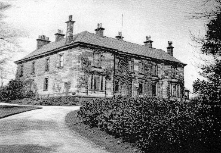
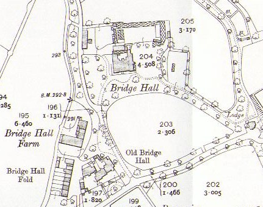
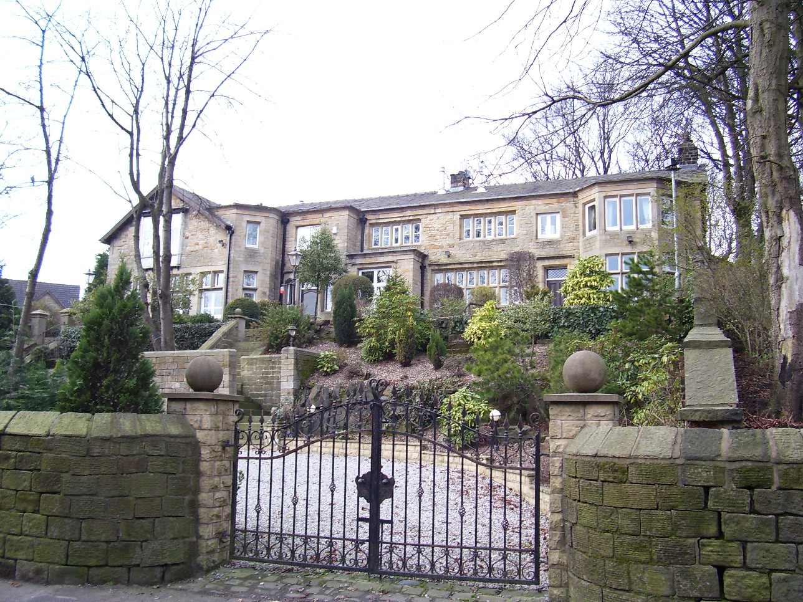
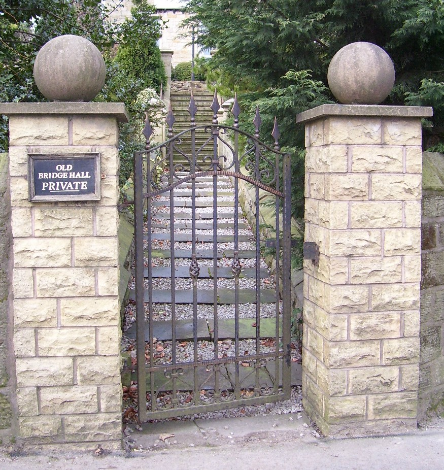
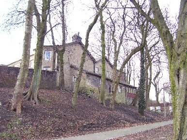

Bridge Hall
Situated on the north bank of the River Roch in the village of Heap was an extensive estate and manufacturing mill. In 1810 James Wrigley took the tenancy of the small papermaking concern and transformed it into what became one of the largest businesses in the British papermaking industry. Wrigley later built a new Bridge Hall, a four‑square Victorian mansion, for the family residence, and the original house acquired the distinguishing title “Old Bridge Hall”. As a result, tracing the history of the two halls and the estate can be confusing.
The hall probably took its name from the Bury family of Bridge, recorded there in 1278. William del Bridge was master of the area at that time. The first definitive reference to the estate appears in 1445–6 in a deed of “John Holt of the Bridge”. The Holt family, a branch of the Holts of Gristlehurst, subsequently owned the hall for around 250 years. John Holt married the daughter of John Clegg of The Mill House, and around 1480 Roger Holt of Bridge was registered as a gentleman.
In 1594 Bridge Hall was recorded as holding an adjoining water mill rented for 12 shillings from the Earl of Derby. This ‘socage’ tenure was unpopular with landlords because the tenant owed no real service or rent and could freely sell or bequeath the land. The house was rebuilt several times, and late‑medieval stonework remained visible on the east side, including a narrow stone‑arched window. The mill, millstones, and water corn mill were mentioned in the will of Peter Holt of Bridge, gentleman, on 21 June 1651. Roger Holt, son of Peter, also referred to a fulling mill on the estate. Roger died on 29 May 1682 and left the estate to his son Peter, who in turn left it to his brother John Holt. On 2 February 1691 John Holt sold the estate, containing 68 acres, to his cousin Nathaniel Gaskell of Manchester, founder of Cross Street Chapel, for £1,950. The hall had seven hearths taxed in 1666 and was one of the most important houses in Bury.
The Holts valued their independence, and Captain Peter Holt supported the Parliamentary side at Bolton in the Civil War against the Earl of Derby. Properties were confiscated during the Commonwealth period, but the Stanleys restored the land after the Restoration, and the ‘socage’ tenure was abolished. One of the Holts later married a Royalist Greenhalgh of Chamber Hall. The water mill adjoining the capital messuage, situated at the head of the glacial overflow channel of the Roch, provided an excellent head of water for power, likely used for corn milling and fulling woollen cloth.
To read more about the Holts of Bridge Hall, click here.

Bridge Hall, Heap Bridge

Map of Bridge Hall, Heap Bridge, 1908
Old Bridge Hall, Heap Bridge, is the only remaining hall still standing. Bridge Hall was demolished in 1954; its last occupant was Constance Wrigley, and during the Second World War it was requisitioned by the National Fire Service. The site of Bridge Hall is now a modern housing development. Old Bridge Hall stands on Bridge Hall Lane, Heap Bridge, near Bury.
Pictures of Old Bridge Hall, Heap Bridge



Modern Location - Bridge Hall near Old Bridge Hall, Heap Bridge
Bridge Hall Lane, Heap Bridge, Bury, Greater Manchester BL9 7PB
Interactive map showing the modern location of the historic Holt property. Zoom and drag to explore.